Guided Exercise: Guided solution
Create a virtual machine and live migrate it using the web console.
Outcomes
-
Live-migrate a virtual machine (VM) from servera to serverb.
As the student user on the workstation machine, use the lab command to prepare your environment for this exercise, and to ensure that all required resources are available.
[student@workstation ~]$ lab start migration-cockpit
Instructions
-
Configure shared storage for
serveraandserverb.-
Verify the NFS export on the
workstationmachine. The workstation machine is configured as a NFS server by thelab startcommand you ran in the preceding step.[student@workstation ~]$ sudo exportfs [sudo] password for student: /mnt <world>
-
Open a new terminal to
workstationand log in toservera. Mount the shared directory on the source machine (servera).-
Use the sudo password
studentwhenever required.[student@workstation ~]$ ssh servera [student@servera ~]$ sudo -i [sudo] password for student: [root@servera ~]# mount workstation:/mnt /mnt [root@servera ~]# mount | grep workstation workstation:/mnt on /mnt type nfs4 ...
-
The last command verifies that the mount is successful.
-
-
Open a new terminal to
workstationand log in toserverb. Mount the shared directory on the destination machine (serverb).-
Use the sudo password
studentwhenever required.[student@workstation ~]$ ssh serverb [student@serverb ~]$ sudo -i [sudo] password for student: [root@serverb ~]# mount workstation:/mnt /mnt [root@serverb ~]# mount | grep workstation workstation:/mnt on /mnt type nfs4 ...
-
The last command verifies that the mount is successful.
-
-
-
Add secondary hosts on the RHEL web console
-
Switch to the
workstationterminal and enable the service for the RHEL web console.[student@workstation ~]$ sudo -i [sudo] password for student: [root@workstion ~]# systemctl enable --now cockpit.socket
-
Visit the GNOME login screen on the
workstationmachine. Click thestudentuser account. Enter student when prompted for the password. -
Navigate to
https://localhost:9090to access the RHEL web console on the Firefox browser.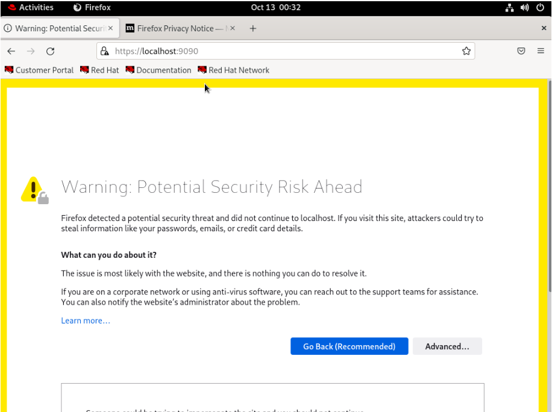 -
Proceed with the self-signed certificate by clicking on Advanced… and Accept the Risk and Continue.
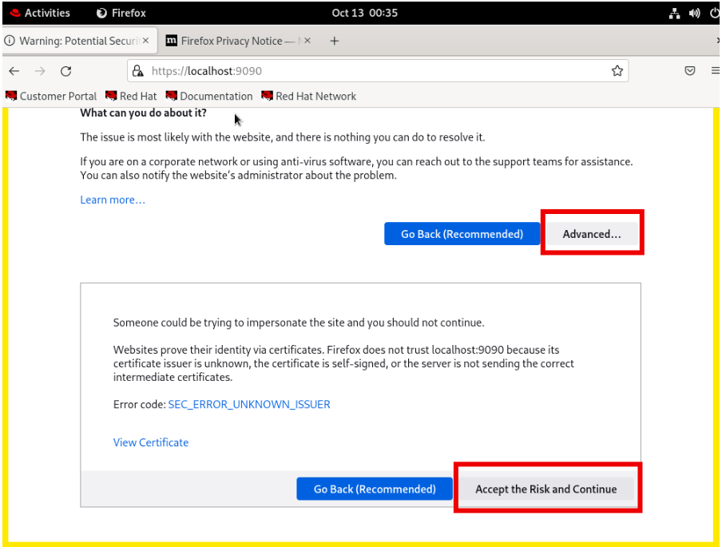 -
Log in by using the username
studentand by entering thestudentpassword.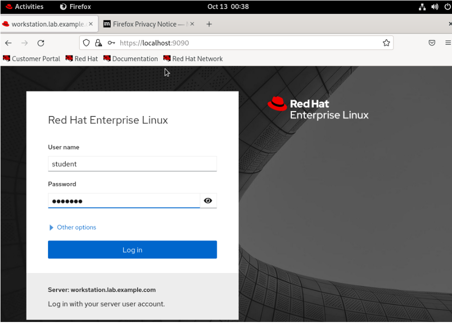 -
Click Turn on administrative access. Enter the password student when prompted and click Authenticate.
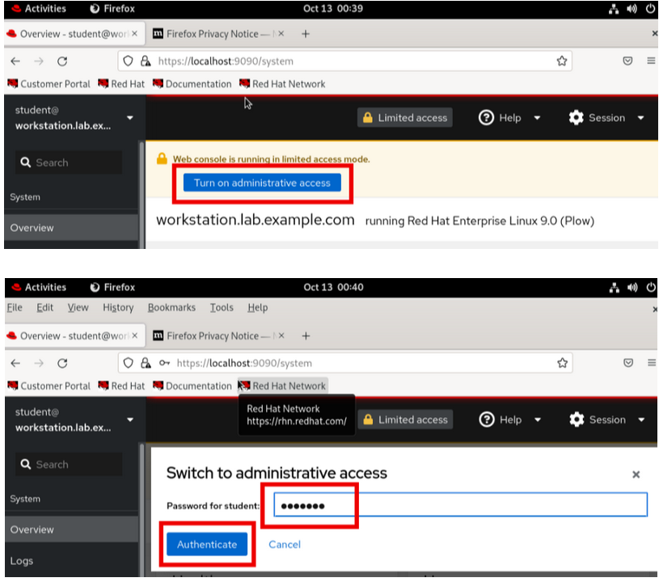-
You have now switched to administrative access on the primary host.
-
-
Add
serveraas a secondary host.-
Expand the hidden Hosts menu by clicking the down-arrow in the left pane. The image displays the host menu section.
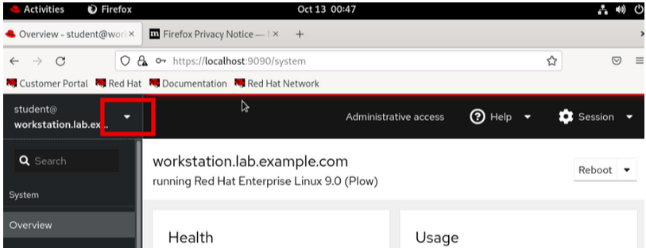 -
In the Host menu, select Add new host.
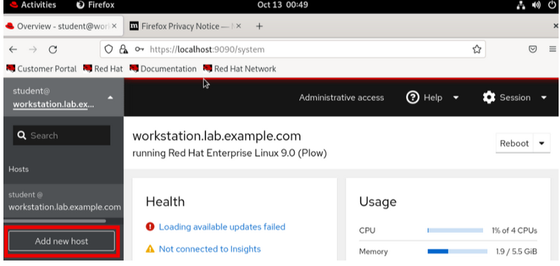 -
The Add new host dialog appears.
-
In the Add new host dialog, configure the following properties and click Add.
Host: servera User name: student
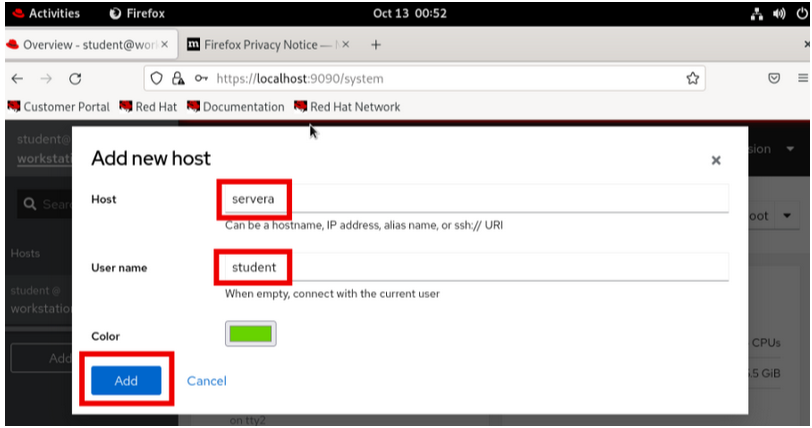
-
-
Add
serverbas another secondary host in the similar way.Host: serverb User name: student
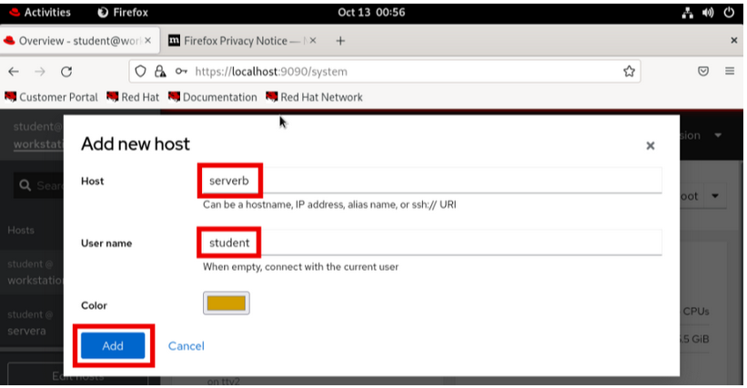 -
Verify both
serveraandserverbgot added successfully by clicking on their names in the left pane. You can see details ofserveraandserverbafter clicking on them.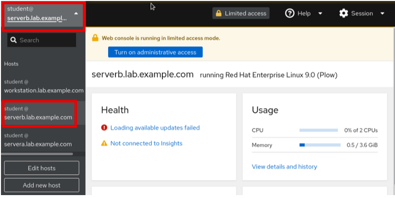
-
-
Create a storage volume on servera.
-
Switch to
serveraby clicking the down-arrow in the left pane and clickservera. -
Click Turn on administrative access on
servera. Enter the passwordstudentwhen prompted and click Authenticate.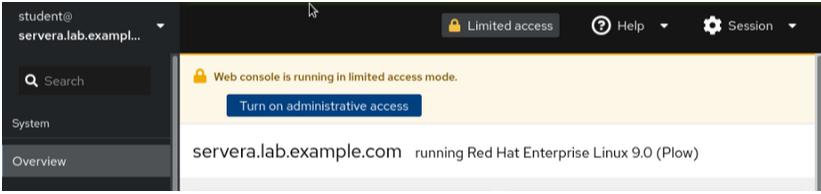 -
Switch to the terminal to start and enable the libvirtd service on
serveraandserverb.[root@servera ~]# systemctl enable --now libvirtd Created symlink /etc/systemd/system/multi-user.target.wants/libvirtd.service → /usr/lib/systemd/system/libvirtd.service. ...output omitted...
[root@serverb ~]# systemctl enable --now libvirtd Created symlink /etc/systemd/system/multi-user.target.wants/libvirtd.service → /usr/lib/systemd/system/libvirtd.service. ...output omitted...
-
Refresh the web page (web console) in Firefox browser to reflect the changes.
Note: The Virtual Machines option on the sidebar is visible on servera and serverb because the cockpit-machines package is installed on both servera and serverb. This installation was done when you ran the lab start migration-cockpit script at the beginning of this exercise. You do not see the Virtual Machines option on the workstation web console as this package is not installed on it.
-
Navigate to Virtual Machines → Storage pools. Click Create storage pool. …Enter the details as given in the following table:
Name
migration-test
Type
Network file system
Target
path /mnt/
Host
workstation
Source
path /mnt
-
Click Create.
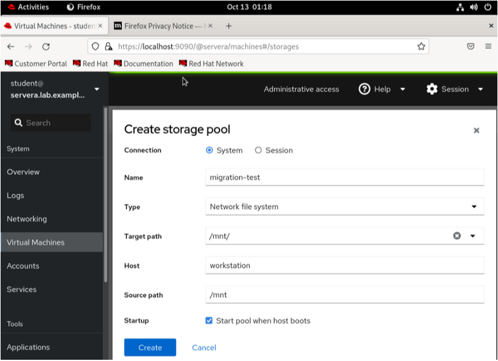 -
Make sure to use the same names as given in the instructions for a successful grading at the end of the exercise.
-
-
Click Activate. This button starts the inactivate storage pool.
-
Add a storage volume in the
migration-teststorage pool.-
Click the down-arrow key and click the Storage volumes tab. Click Create volume.
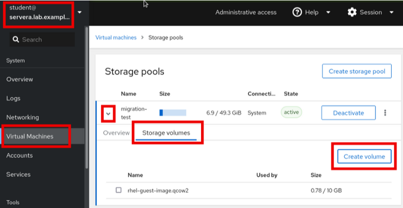 -
Enter the name as migration-volume and the size 20 GiB. Click Create.
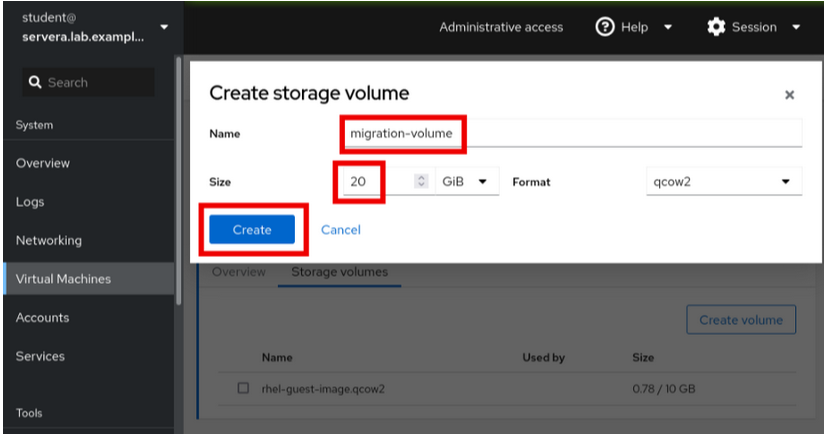
-
-
Verify that the storage volume is created. Refer the following screenshot to match it with your UI.
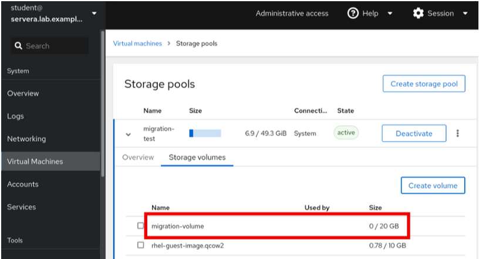
-
-
Verify the
default networkalready present on bothserveraandserverb.-
On
servera, Click Virtual machines breadcrumb.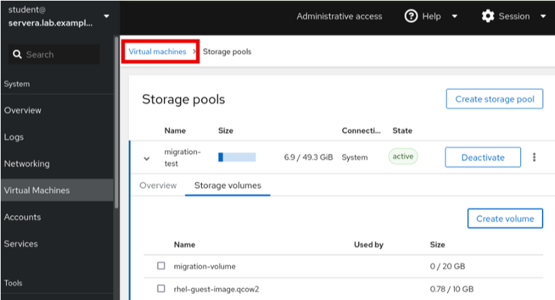 -
Click 1 Network.
-
Verify that you have a network named
default. Click the down-arrow to expand the details and review them. Do not make any changes.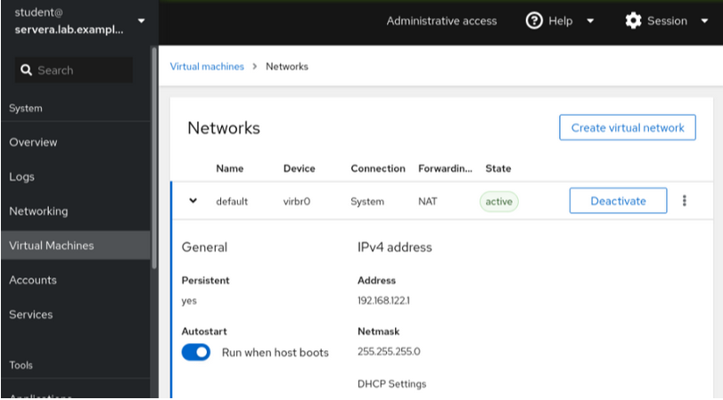-
You use this network to create the VM in a later step.
-
-
Switch to
serverb, click Turn on administrative access. Enter the password student and click Authenticate.-
Navigate to Virtual machines → 1 Network to view the same default network. Verify that the network is in active state. Do not make any other changes.
-
The source and destination must have identical network for the migration to succeed.
-
-
-
Set the required SElinux contexts on the shared volume.
-
Run the following commands on
serveraso that SElinux allows the virsh utility to access the shared volume for the VM creation.[root@servera ~]# semanage fcontext -a -t virt_image_t '/mnt/migration-volume' [root@servera ~]# restorecon -v '/mnt/migration-volume' [root@servera ~]# setsebool -P virt_use_nfs 1
-
Run the same commands on
serverbas it is the destination host.[root@serverb ~]# semanage fcontext -a -t virt_image_t '/mnt/migration-volume' [root@serverb ~]# restorecon -v '/mnt/migration-volume' [root@serverb ~]# setsebool -P virt_use_nfs 1
-
-
Create a virtual machine on
servera.-
Switch to
serveraon the RHEL web console UI. -
Create a virtual machine on
serverawhich is the source host from which you migrate the VM.-
Click Virtual machines breadcrumb and then click Create VM.
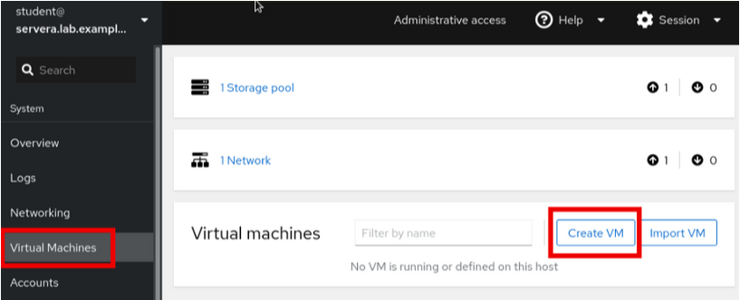
-
-
Enter the details as mentioned in the below table.
Name
test-rhel
Connection
System
Installation type
Local install media (ISO image or distro install tree)
Installation source
/mnt/rhel-guest-image.qcow2
Operating system
Red Hat Enterprise Linux 8.5
Storage
migration-test
Volume
migration-volume
Memory
2 GiB
-
Click Create.
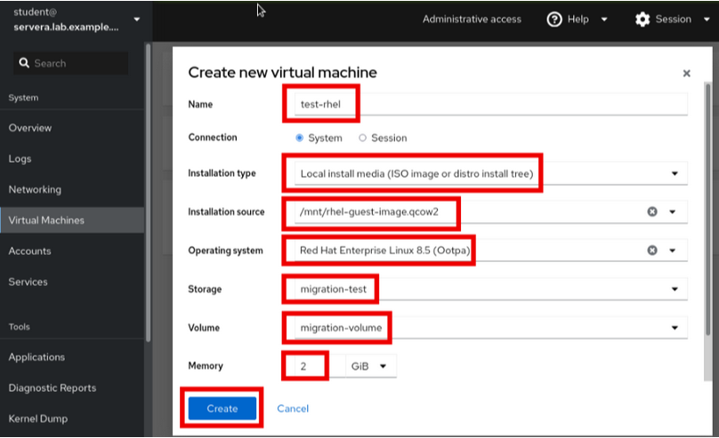
-
-
Verify that VM is in the
runningstate.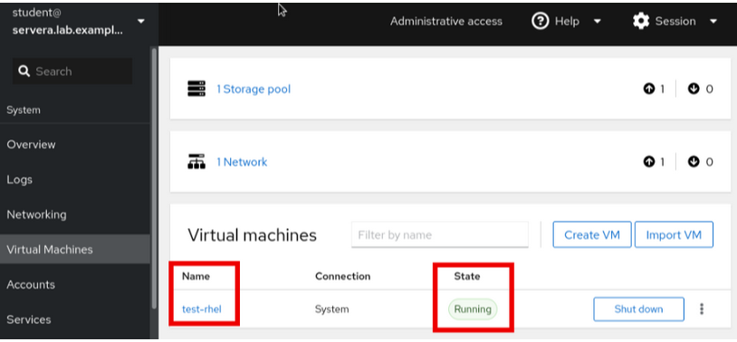
-
-
Allow the required port number range on the firewall of
serveraandserverb.-
Open the port range of
49152-49215onserveraandserverb. Ports49152-49215`are needed by QEMU for transfering the memory and disk migration data.[root@servera ~]# firewall-cmd --permanent --add-port=49152-49215/tcp success [root@servera ~]# firewall-cmd --reload success
[root@serverb ~]# firewall-cmd --permanent --add-port=49152-49215/tcp success [root@serverb ~]# firewall-cmd --reload success
-
-
Live-migrate the VM.
-
Use the Migrate option from the dropdown on selecting the three dots of the VM.
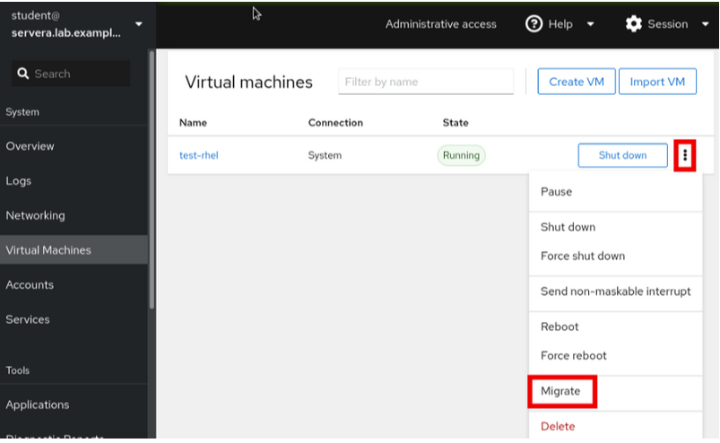 -
Enter the Destination URI as
qemu+ssh://serverb/systemand click Migrate.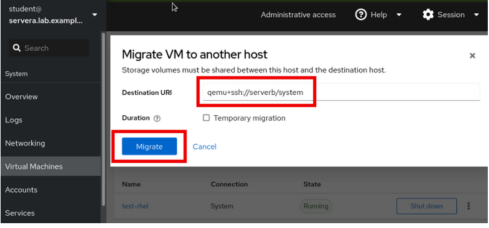 -
Verify that you see the following error.
Cannot recv data: Host key verification failed.: Connection reset by peer
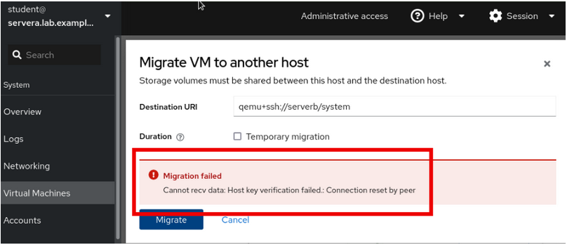-
virsh migrateruns the migration as therootuser. For migration to succeed, you copy the public keys of therootuser betweenserveraandserverb, remember that this was a prerequisite.
-
-
-
Exchange SSH keys of the root user of
serveraandserverb.-
Generate a SSH key on
servera.[root@servera ~]# ssh-keygen Generating public/private rsa key pair. Enter file in which to save the key (/root/.ssh/id_rsa): Enter passphrase (empty for no passphrase): Enter same passphrase again: Your identification has been saved in /root/.ssh/id_rsa Your public key has been saved in /root/.ssh/id_rsa.pub The key fingerprint is: ...output omitted...
-
Copy the contents of the public key file at
/root/.ssh/id_rsa.pubonserveraand add it to/root/.ssh/authorized_keysfile inserverb. -
Generate a SSH key on
serverb.[root@serverb ~]# ssh-keygen Generating public/private rsa key pair. Enter file in which to save the key (/root/.ssh/id_rsa): Enter passphrase (empty for no passphrase): Enter same passphrase again: Your identification has been saved in /root/.ssh/id_rsa Your public key has been saved in /root/.ssh/id_rsa.pub The key fingerprint is: SHA256:oGOtnsrVYrbRx8a819sszA/cMp50U++Noz1JzGWPC6M root@serverb.lab.example.com The key's randomart image is: ...output omitted...
-
Copy the contents of the public key file at
/root/.ssh/id_rsa.pubonserverband add it to/root/.ssh/authorized_keysfile inservera. -
Ensure that you can SSH from
serveratoserverbasrootuser and vice versa.[root@servera ~]# ssh serverb The authenticity of host 'serverb (172.25.250.11)' can't be established. ED25519 key fingerprint is SHA256:peUGgfxFNw6Jt6WK4CB2rs+jql1/LhA32M1+8zBawLI. This key is not known by any other names Are you sure you want to continue connecting (yes/no/[fingerprint])? yes Warning: Permanently added 'serverb' (ED25519) to the list of known hosts. ...output omitted...
[root@serverb ~]# ssh servera The authenticity of host 'servera (172.25.250.10)' can't be established. ED25519 key fingerprint is SHA256:peUGgfxFNw6Jt6WK4CB2rs+jql1/LhA32M1+8zBawLI. This key is not known by any other names Are you sure you want to continue connecting (yes/no/[fingerprint])? yes Warning: Permanently added 'servera' (ED25519) to the list of known hosts. ...output omitted... [root@servera ~]#
-
-
Migrate the VM.
-
Click Migrate. You do not see the VM on
serveraanymore. -
Switch to
serverbon the web console and verify that the VM is migrated successfully.-
Refresh the web page if VM is not seen on serverb after migration. The VM should be in Running state.
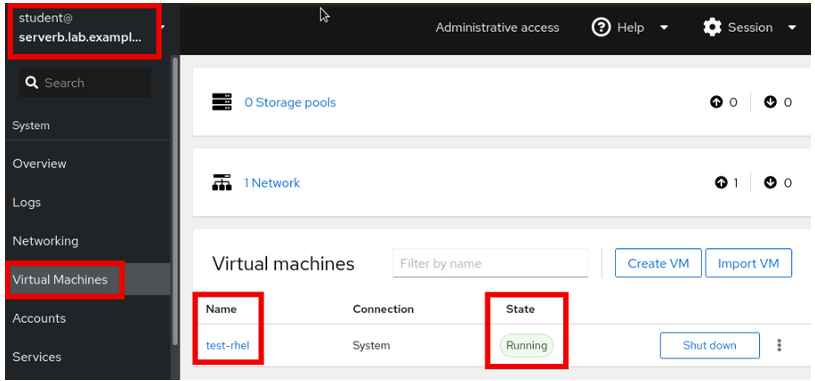 -
Alternatively, verify with the
virsh listcommand onserverbas therootuser.[root@serverb ~]# virsh list Id Name State --------------------------- 1 test-rhel running
-
-
-
Verify your work.
-
Run the following command on the workstation machine as the student user to verify your work.
[student@workstation ~]$ lab grade migration-cockpit Grading lab.
SUCCESS Checking lab systems SUCCESS Verifying that the VM with name 'test-rhel' exists on serverb SUCCESS Verifying that the test-rhel VM migrated from servera to serverb
Overall lab grade: PASS
-
Finish
On the workstation machine, use the lab command to complete this exercise. This step is important to ensure that resources from previous exercises do not impact upcoming exercises.
[student@workstation ~]$ lab finish migration-cockpit